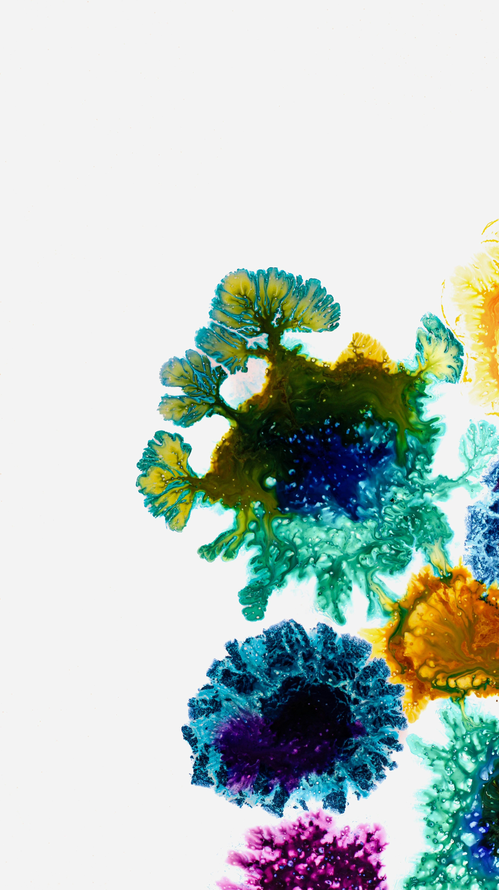
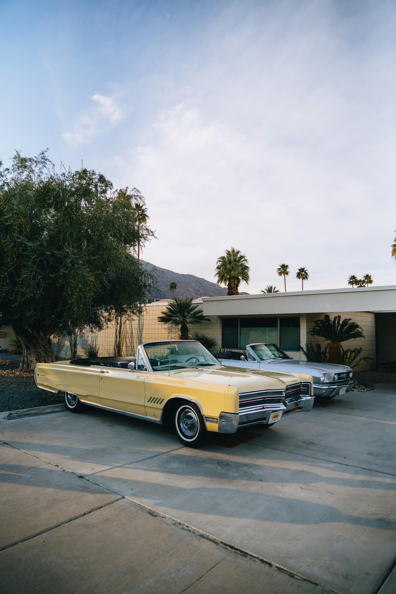

-

A Warm, Welcoming Picture of the Dessert
2018
-

A Dynamic Photo of a Fungal Blot
2016
-
Rainy Tokyo
2021
-
Pink Geometry
2023
-
A Pink Flower
2011
-

City Square
2015
-

Vintage Cars
2016
-

Gourmet Dish
2017
-

Boat on the Ocean
2022
-

Pink Building
2008
-
- Favicon and Hero Image
- Warm Desert by NEOM
- Fungal Blot by Susan Wilkinson
- Tokyo by Jezael Melgoza
- Pink Geometry by Eveling Salazar
- Pink Flower by Aaron Burden
- City Square by Bernardo Lorena Ponte
- Vintage Cars by Peter Thomas
- Food Dish by Lisha Riabinina
- Boat in Water by Catia Dombaxe
- Pink Town by Juan Domenech
- How to Use a Video Camera for Beginners by Think Media
- Header Camera Icon by FontAwesome.com
If you'd like to contact me about my photography, please reach me at keenan@fakeemail.com